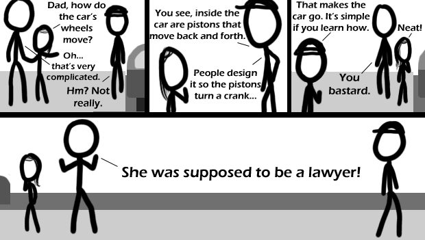

Comic JK 401
When I Feel Like It
⇤
<
?
>
⇥

⇤
<
?
>
⇥
Forum
.
RSS
.
Digg
.
Facebook
.
Reddit
.
Twitter
.
Stumbleupon
Enter your thoughts on number 401 here. Please, no spamming, trolling, or phreaking. There's a lot more to it than pistons->crank->vroom. >She'll learn that when she becomes a mechanical engineer If you have the thirst for knowledge that comes with being a good engineer, I don't think you could ever become something like a lawyer. >Very true. At most unis, there seems to be an engineering vs law rivalry. The engineering students always come up on top. >of course we would say that, not many jk readers are law students Id bet >Why? I don't think there is one in mine. >>I guess the law students say the opposite. ;-) >>>They deny its existence. >>>>Ours is engineering Vs. biological sciences. The biomedical engineers are a very confused group of people. >>>>>Commerce vs. everyone else. "Commies! CommiesCommiesCommies!" >>>>>>Ours is Engineers vs Math&Natural Sciences. Sometimes they join together against a common foe, the Architects and the Urban planners. Our medicine students are non-present because they are all in their faculty building, near the hospital on the other side of the city. Also, we Physicists, love to make jokes about the biologists, but since they, and the chemists have all the girls, we keep quiet about it outside the faculty building. I'm still single though, so it doesn't really help. >>>>>>>Here it is science ad engineering students looking down on all others, humanities, social studies, fine arts and business are all seen as second (third for business) rate majors. Being physics and computer science, i agree to an extent >>>>>>>>That's how it is here as well, there's pure math and science on top, then engineering, then everything else, then business, and then beneath business is communication >>>>>>>>Luckily, I study at an "institute of technology" so we don't have all these second-rate humans (I sound so full of myself, right?) studying liberal arts and whatnot, but we still have those two annoying liberal vegan biochemists (a couple from hell) who shout "meat is murder" to passing people in the campus... They even go as far as coming to people, minding their business and start rambling about how "if you eat meat, eggs, drink minlk or eat any of its products, you're a murderer and you will face god's judgement whe you die. become a vegan and redeem yourself, before it's too late" bah... I reeeeally want to punch them... >>>>>>>>>I dislike vegans. I have never heard any good reasons to be a vegan. That and God dislikes their diet. >>>>>>>>>How does drinking milk make one a murderer? by that logic, all babies are murderers. >>>>>>>>>I am an agnostic vegan as a Junior in high school; I'm careful never to force my beliefs on others. But I would very much like more people to be vegan, as I think the animals would appreciate it. >>>>>>>>>>>>>>>With us, it's Engineering Vs English (With the current jobs market, they've already lost), Philosophy (they have 4 hours of lectures a week, lazy ****s) and Film & Theatre (that's where our budget went). >>>>>>>>>>>>>>>>Holy shit that's a lot of >s. Pay attention, someone is about to say something immediately below what I am writing here. >You're All Douches!!! > Am not! > ^ > am too This sounds like the beginning of a series! Lawyers and (smart) business people make more money for less work then engrs. How is that worse? >That's what the dad in the comic is saying... >>(Btw, lawyers and MBAs have twice the higher education of engineering bachelors', so big shock they make more money. PhDs in engineering command much higher salaries, but most of them choose to be professors.) You sir, are a terrible father.